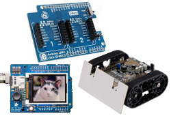
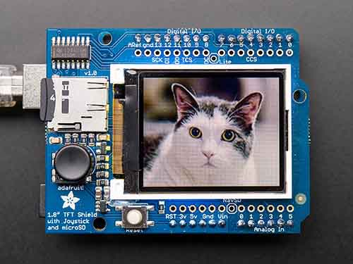

TinyCLR OS Accessories

There are thousands of accessories that can be used with the FEZ. However, we have hand picked a few of our favorites and then built the necessary drivers for them.
Have a list of your own and want to contribute? Talk to us, directly or through the community forum.
Adafruit Display Shield

The Adafruit 1.8" Color TFT Shield w/microSD and Joystick plugs right on top of FEZ, or any other Arduino-pinout compatible board.
To use this shield, just plug it on top of your FEZ.
The driver is found here.
MikroElektronika Arduino UNO Click Shield

Through MikroElektronika's mikroBUS standard, hundreds of Mikro's Click boards can be easily connected to your board.
The BrainPad, Clicker, and Quail boards all have sockets for plugging in click boards.
This video talks about the technology behind SPI bus, shift registers, and serial-parallel data. It uses the LED ring click on the BrainPad.
The source code is found here.
You can use these click boards with FEZ, or any other Arduino-pinout compatible board, through the Arduino UNO click shield.
The same code used above with the BrainPad can be used with FEZ and the Arduino UNO click shield. Simply, change the pins from BrainPad to FEZ. The pins are labeled right on the shield. For example, the CS pin on socket 1 is labeled CS/D10.
The complete project is found here
Pololu Zumo Robot

The Pololu Zumo Robot from Pololu is one of our favorites, especially the pre-assembled version.
Drop your FEZ on top of the Zumo Robot, or any other Arduino-compatible board, and you are ready to make the robot follow lines and dance around.
The driver is found here.
You are now ready for some serious dancing!
public static void Main()
{
bool state = false;
while (!ZumoBot.ButtonIsPressed())
{
state = !state;
ZumoBot.SetLed(state);
ZumoBot.Beep();
Thread.Sleep(500);
}
Thread.Sleep(300);
ZumoBot.SetLed(false);
Thread.Sleep(300);
ZumoBot.SetLed(true);
Thread.Sleep(300);
ZumoBot.SetLed(false);
Thread.Sleep(300);
ZumoBot.SetLed(true);
while (true)
{
long left = ZumoBot.Reflectors.GetLevel(0);
long right = ZumoBot.Reflectors.GetLevel(5);
//Debug.WriteLine(">" + ZumoBot.Reflectors.GetLevel(0));
//System.Diagnostics.Debug.WriteLine("l: " + left + " r: " + right);
if (left < 8000 && right < 8000)
{
ZumoBot.Motors.Move(40, 40);
}
else
{
// backup and turn
ZumoBot.Motors.MoveBackward();
Thread.Sleep(500);
ZumoBot.Motors.Stop();
Thread.Sleep(1000);
ZumoBot.Motors.TurnLeft();
Thread.Sleep(500);
ZumoBot.Motors.Stop();
Thread.Sleep(1000);
}
Thread.Sleep(30);
}
}
Seeed Grove Starter Kit

Grove is a modular electronic platform for quick prototyping. Every module has one function, such as touch sensing, creating audio effects and so on. Just plug the modules you need to the base shield, then you are ready to test your ideas. We have picked the Seeed Grove Starter Kit for Arduino as a starting base but you can add additional Grove modules as well.
The included Grove modules plug into the included arduino shield. This shield works with any arduino pinout compatible board, like the FEZ.
You can get the drivers here.
This example makes some noise!
Buzzer buzz = new Buzzer(FEZ.GpioPin.D4);
buzz.Beep();
Thread.Sleep(5000);
buzz.TurnOn();
Thread.Sleep(1000);
buzz.TurnOff();
while(true)
{
buzz.Beep();
Thread.Sleep(1000);
}
This example will read the temperature
TemperatureSensor temp = new TemperatureSensor(FEZ.AdcChannel.A1);
while(true)
{
Debug.WriteLine("-> " + temp.ReadTemperature());
Thread.Sleep(1000);
}
This example will show some text on the character display.
LcdRgbBacklight lcd = new LcdRgbBacklight();
lcd.Clear();
lcd.SetBacklightRGB(100, 100, 0);
lcd.BlinkBacklight(true);
lcd.BlinkBacklight(false);
lcd.Write("*** TinyCLR ***");
Thread.Sleep(1000);
lcd.SetCursor(0, 1);
lcd.Write("Count:");
int count = 0;
while (true)
{
lcd.SetCursor(7, 1);
lcd.Write(count.ToString());
count++;
lcd.SetBacklightRGB(100, 100, (byte)count);
Thread.Sleep(100);
}
Warning
Pay attention to the 3.3V-5V switch on the shield. The rotary and temperature sensors only work with 3.3V but the RGB character display only works with 5V.
Since the character display connects to I2C and only works with 5V. We have modified one of the I2C sockets to be always 5V. This allows us to keep the switch at 3.3V, leaving all other sockets at 3.3V.
Warning
These steps require some experience and will void your warranty!
Start by cutting the power trace going to the last socket.
(image)
Now, add a wire from the socket directly to 5V.
(image)
Sparkfun Ardumoto Shield Kit

The sparkfun Sparkfun Ardumoto Shield Kit is a low cost way to quickly build a robot.
Plug the shield on top of your FEZ, or any other Arduino-pinout compatible board.
You are now ready for some serious dancing!
public static void Main()
{
var GPIO = GpioController.GetDefault();
var DIRA = GPIO.OpenPin(FEZ.GpioPin.D2);
var DIRB = GPIO.OpenPin(FEZ.GpioPin.D4);
DIRA.SetDriveMode(GpioPinDriveMode.Output);
DIRB.SetDriveMode(GpioPinDriveMode.Output);
var PWM1 = PwmController.FromId(FEZ.PwmPin.Controller1.Id);
var PWM3 = PwmController.FromId(FEZ.PwmPin.Controller3.Id);
PWM1.SetDesiredFrequency(5000);
PWM3.SetDesiredFrequency(5000);
var PWMA = PWM1.OpenPin(FEZ.PwmPin.Controller1.D3);
var PWMB = PWM3.OpenPin(FEZ.PwmPin.Controller3.D11);
PWMA.Start();
PWMB.Start();
// reverse direction every one second!
// Do not foget the shield needs power. Thsi can come from VIN, meaning plug a power pack into your *duino board.
PWMB.SetActiveDutyCyclePercentage(0.9);
while (true)
{
DIRA.Write(GpioPinValue.High);
DIRB.Write(GpioPinValue.High);
System.Threading.Thread.Sleep(1000);
//change speed
PWMA.SetActiveDutyCyclePercentage(0.9);
DIRA.Write(GpioPinValue.Low);
DIRB.Write(GpioPinValue.Low);
System.Threading.Thread.Sleep(1000);
//change speed
PWMA.SetActiveDutyCyclePercentage(0.5);
}
}
Visit our main website at www.ghielectronics.com and our community forums at forums.ghielectronics.com.